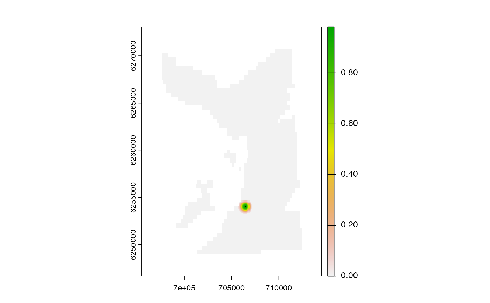

This function is part of a set of acs_setup_*() functions that prepare the layers required to evaluate the likelihood of acoustic observations in an AC*PF algorithm. The function is an example detection probability function, of the kind required by acs_setup_detection_kernels().
acs_setup_detection_kernel(
.mooring,
.bathy,
.mask = TRUE,
.ddetx = ddetlogistic,
...
)A one-row data.table that defines the location of an acoustic receiver and associated information required to calculate detection probability via .ddetx. In this function, receiver coordinate columns (receiver_x and receiver_y) and the detection range (receiver_range) is required.
A SpatRaster that defines the grid on which detection probability is calculated.
A logical variable that defines whether or not to mask the detection kernel by .bathy. Use .mask = TRUE if .bathy contains NAs.
A function that calculates detection probability, such as ddetlogistic(). In this implementation, the function is used to translate a SpatRaster of distances (m) (from each grid cell to the receiver in .data) via terra::app(). The function must accept a .gamma argument (even if this is ignored, see below).
Additional arguments passed to .ddetx. These arguments as passed to ddetlogistic() by default. .gamma is set internally to .mooring$receiver_range.
The function returns a SpatRaster that defines the detection kernel around a specific receiver.
An AC*PF algorithm is a particle filtering algorithm that incorporates acoustic observations to reconstruct the possible movements of an individual. At each time step in such an algorithm, we evaluate the likelihood of acoustic observations (the presence or absence of detections at each operational receiver, accounting for receiver placement) given particle samples. The likelihood of the acoustic observations depends upon how detection probability declines away from receiver(s) in space; i.e., the shape of a 'detection kernel' (see acs_setup_detection_kernels()). For any one receiver, the form of the kernel depends on the input to the .ddetkernel in acs_setup_detection_kernels(). This function exemplifies one possible input to this argument, which is a model in which detection probability declines logistically with distance from a receiver.
The default settings for this function are used to streamline examples and do not represent a generically suitable model.
The function does not check user inputs.
To implement such an algorithm, see:
pat_setup_data() to set up datasets;
acs_setup_*() functions to prepare layers required for likelihood calculations, i.e.:
acs_setup_detection_overlaps(), which identifies detection overlaps;
acs_setup_detection_kernel(), which prepares a detection kernel;
acs_setup_detection_kernels(), which prepares detection kernels;
pf_lik_ac() to define the likelihood of acoustic data;
pf_forward() to run the simulation;
dlist <- pat_setup_data(.moorings = dat_moorings,
.bathy = dat_gebco(),
.lonlat = FALSE)
#> Warning: `.bathy` name updated from 'layer' to 'bathy'.
m <- dlist$data$moorings[1, ]
b <- dlist$spatial$bathy
k <- acs_setup_detection_kernel(m, b)
terra::plot(k)
points(m$receiver_x, m$receiver_y, pch = ".")
